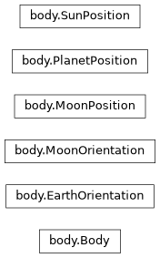

ssapy.body
Classes representing celestial bodies.
Classes
|
A celestial body. |
|
Orientation of earth in GCRF. |
Orientation of moon in GCRF. |
|
Position of moon in GCRF. |
|
|
Position of a planet in GCRF. |
Position of sun in GCRF. |

Inheritance Relationship
Functions
|
Get a Body object for a named body. |